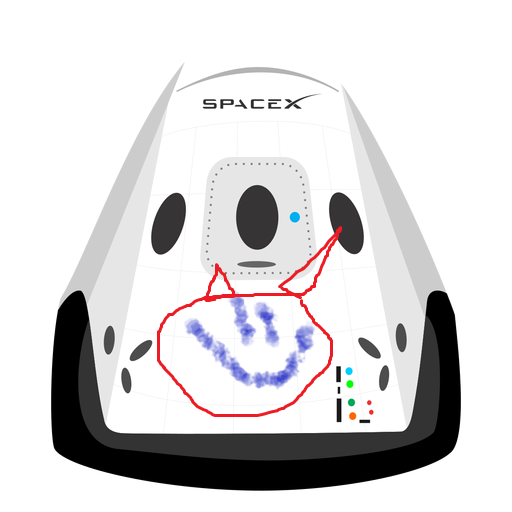

Hyperblog
Tu blog de cabecera
Este es el título atractivo e interesante del post
Y este es el párrafo de inicio donde vamos a explicar las cosas increíbles que se pueden hacer con ramas
La forma más efectiva para compartir información es a través de un blog

Deberías considerar iniciar uno
Suscribete y dale like

Supongamos que esta cosa es el footer